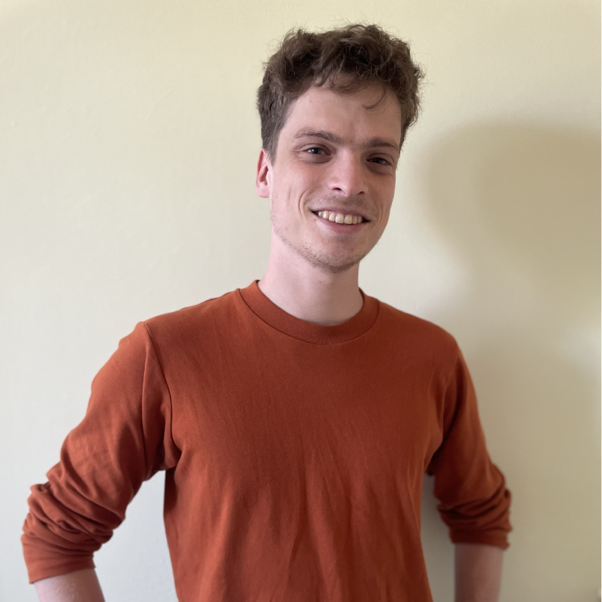

A little about me:
Hi! I am a user experience designer on the lookout for my next role. I am excited to leverage my visual design and systems thinking skills to build something great. I am extremely observant, a fast learner, with a knack for figuring out complex problems. Professionally, I have created digestible diagrams for complex systems, created user personas, and researched and written and presented on the frameworks of LLMs, Image generators, and HVAC systems. Recently I have been fascinated with iOS development, and just finished creating myQuilt, an AI powered journaling app. On the side I love creating art. Drawing and painting are my go to, but I mix in some screen printing and animating to keep things fresh.